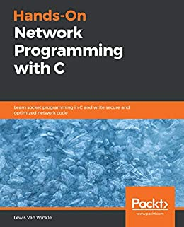
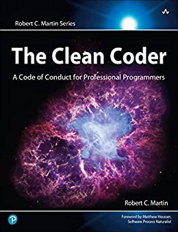
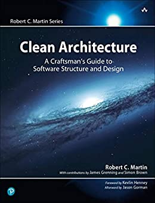

ali.andalibi@web - $
~/bookshelf
~/cv
Grokking Algorithms
Authors:
Aditya Y. Bhargava

Hands-On Network Programming with C
Authors:
Lewis Van Winkle

The Clean Coder
Authors:
Robert Cecil Martin
Clean Code
Authors:
Robert Cecil Martin, Dean Wampler

Clean Architecture
Authors:
Robert Cecil Martin, Kevlin Henney
 Grokking Algorithms
Grokking Algorithms Clean CodeGrokking AlgorithmsClean Code
Clean CodeGrokking AlgorithmsClean Code